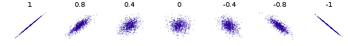

面向程序员的数据挖掘指南 - 1 推荐系统入门¶
本章将介绍协同过滤，基本的距离算法，最后使用Python实现一个简单的推荐算法。
协同过滤，顾名思义，是利用他人的喜好来进行推荐，也就是说，是大家一起产生的推荐。它的工作原理是，在网站上查找一个和你类似的用户，然后将它喜欢的书籍推荐给你。
如何找到相似的用户？
曼哈顿距离¶
顾名思义，在曼哈顿街区要从一个十字路口开车到另一个十字路口，实际驾驶距离就是“曼哈顿距离”。
最简单的距离计算方式是曼哈顿距离。在二维模型中，每个人都可以用(x, y)的点来表示，这里用下标来表示不同的人，(x_1, y_1)表示艾米，(x_2, y_2)表示神秘的X先生，那么他们之间的曼哈顿距离就是：

曼哈顿距离的优点之一是计算速度快，对于Facebook这样需要计算百万用户之间的相似度时就非常有利。
def manhattan(rating1, rating2): """Computes the Manhattan distance. Both rating1 and rating2 are dictionaries of the form {'The Strokes': 3.0, 'Slightly Stoopid': 2.5}""" distance = 0 commonRatings = False for key in rating1: if key in rating2: distance += abs(rating1[key] - rating2[key]) commonRatings = True if commonRatings: return distance else: return -1 #Indicates no ratings in common
欧几里得距离¶
欧几里得距离就是两点之间的直线距离。 下面的斜线就是欧几里得距离，公式是：

曼哈顿距离和欧几里得距离在数据完整的情况下效果最好。
def euclidean(rating1, rating2): """ Computes the Euclidean Distance :param rating1: rating :param rating2: rating :return: distance if common ratings exists, or -1 """ distance = 0 commonRatings = False for key in rating1: if key in rating2: distance += pow(rating1[key] - rating2[key], 2) commonRatings = True if commonRatings: return distance else: return -1 # Indicates no ratings in common
闵可夫斯基距离¶
我们可以将曼哈顿距离和欧几里得距离归纳成一个公式，这个公式称为闵可夫斯基距离(Minkowski Distance)：
其中：
- r = 1, 该公式即曼哈顿距离
- r = 2, 该公式即欧几里得距离
- r = \infty, 切比雪夫距离
Note
r值越大，单个维度的差值大小会对整体距离有更大的影响。
切比雪夫距离¶
切比雪夫距离(Chebyshev Distance)是定义为其各坐标数值差的最大值。
def chebyshev(rating1, rating2): """ Computes the Chebyshev Distance :param rating1: rating :param rating2: rating :return: distance if common ratings exists, or -1 """ distance = 0 commonRatings = False for key in rating1: if key in rating2: distance = max(distance, abs(rating1[key] - rating2[key])) commonRatings = True if commonRatings: return distance else: return -1 # Indicates no ratings in common
皮尔逊相关系数¶
让我们仔细看看用户对乐队的评分，可以发现每个用户的打分标准非常不同：
- Bill没有打出极端的分数，都在2至4分之间；
- Jordyn似乎喜欢所有的乐队，打分都在4至5之间；
- Hailey是一个有趣的人，他的分数不是1就是4。
那么，如何比较这些用户呢？比如Hailey的4分相当于Jordan的4分还是5分呢？我觉得更接近5分。这样一来就会影响到推荐系统的准确性了。Clara最低给了4分——她所有的打分都在4至5分之间，这种现象在数据挖掘领域称为分数膨胀。

解决方法之一是使用皮尔逊相关系数, 用于度量两个变量X和Y之间的相关(线性相关)，其值介于-1与1之间, 1表示完全吻合，-1表示完全相悖。下面是常见的几组(x, y)点集的皮尔逊相关系数。

两个变量之间的皮尔逊相关系数定义为两个变量之间的协方差(\text{cov}(X,Y))和标准差(\sigma_X)的商：
对于样本皮尔逊相关系数:
以上方程给出了计算样本皮尔逊相关系数简单的单流程算法，但是其依赖于涉及到的数据，有时它可能是数值不稳定的。但它最大的优点是，用代码实现的时候可以只遍历一次数据。
def pearson(rating1, rating2): """ Compute pearson coefficient :param rating1: a dictionary :param rating2: a dictionary :return: pearson coefficient """ sum_xy = 0 sum_x = 0 sum_y = 0 sum_x2 = 0 sum_y2 = 0 n = 0 commonRatings = False for key in rating1: if key in rating2: n += 1 x = rating1[key] y = rating2[key] sum_xy += x * y sum_x += x sum_y += y sum_x2 += pow(x, 2) sum_y2 += pow(y, 2) commonRatings = True if not commonRatings: return -1 # now compute denominator denominator = math.sqrt(sum_x2 - pow(sum_x, 2) / n) * math.sqrt(sum_y2 - pow(sum_y, 2) / n) if denominator == 0: return 0 else: return (sum_xy - (sum_x * sum_y) / n) / denominator
余弦相似度¶
当我们用1500万首歌曲来比较两个用户时，很有可能他们之间没有任何交集，这样一来就无从计算他们之间的距离了。类似的情况是在计算两篇文章的相似度时。余弦相似度的计算中会略过这些非零值。它的计算公式是：
其中，\cdot 号表示数量积。||x||表示向量x的模。
余弦相似度在文本挖掘中应用得较多，在协同过滤中也会使用到。
应该使用哪种相似度？¶
- 如果数据存在“分数膨胀”问题，就使用皮尔逊相关系数。
- 如果数据比较“密集”，变量之间基本都存在公有值，且这些距离数据是非常重要的，那就使用欧几里得或曼哈顿距离。
- 如果数据是稀疏的，则使用余弦相似度。
Note
在数据标准化(\mu=0,\sigma=1）后，Pearson相关性系数、余弦相似度、欧式距离的平方可认为是等价的[1]。
kNN¶
上面的做法中，我们只依靠最相似的一个用户来做推荐，如果这个用户有些特殊的偏好，就会直接反映在推荐内容里。解决方法之一是找寻多个相似的用户，这里就要用到K最邻近算法了。
在协同过滤中可以使用K最邻近算法来找出K个最相似的用户，以此作为推荐的基础。不同的 应用有不同的K值，需要做一些实验来得出。以下给到读者一个基本的思路。 假设我要为Ann做推荐，并令K=3。使用皮尔逊相关系数得到的结果是：
| Person | Pearson |
|---|---|
| Sally | 0.8 |
| Eric | 0.7 |
| Amanda | 0.5 |
这三个人都会对推荐结果有所贡献，问题在于我们如何确定他们的比重呢？ 我们直接用相关系数的比重来描述，Sally的比重是0.8/2=40%，Eric是0.7/2=35%，Amanda 则是25%：
假设他们三人对Grey Wardens的评分以及加权后的结果如下：
| Person | Grey Wardens Rating | Influence |
|---|---|---|
| Sally | 4.5 | 25% |
| Eric | 5 | 35% |
| Amanda | 3.5 | 40% |
最后计算得到的分数为为加权和 4.5\times 25\% + 5\times 35\% + 3.5 \times 40\%。
Python推荐模块¶
Cai-Nicolas Zeigler从图书漂流站收集了超过100万条评价数据——278,858位用户为271,379本书打了分。数据可以从这个地址获得。
CSV文件包含了三张表：
- 用户表，包括用户ID、位置、年龄等信息。其中用户的姓名已经隐去；
- 书籍表，包括ISBN号、标题、作者、出版日期、出版社等；
- 评分表，包括用户ID、书籍ISBN号、以及评分（0-10分）。
class Recommender: def __init__(self, books, users, user_ratings, book_ratings): """ initialize basic data :param books: a dictionary of books, whose key is book id :param users: a dictionary of users, whose key is user id :param book_ratings: a dictionary of book ratings, whose key is book id :param user_ratings: a dictionary of user ratings, whose key is user id """ self.books = books self.users = users self.book_ratings = book_ratings self.user_ratings = user_ratings def recommend(self, user_to_recommend_int, k=1): """ Recommend user books :param user_to_recommend_int: int, user id :param k : int, for nearest k neighbors :return: a list of books """ user_to_recommend = str(user_to_recommend_int) if user_to_recommend not in self.users: raise Exception("user does not exist!!") # find the user having min distances from user_to_recommend distances = [] find_user = False for user in self.users: if user_to_recommend == user: continue # extract user ratings based on user ids, # and compute the distance between them distance = Distance.pearson(self.user_ratings[user_to_recommend], self.user_ratings[user]) if distance != -1: distances.append([user, distance]) find_user = True if not find_user: return [] # sort user based on their distances # pearson 系数越大，距离越近，所以用reverse distances.sort(key=lambda x: x[1], reverse=True) # compute weight based on distances distances = distances[0:k] sum_distance = sum([distance for user, distance in distances]) for i in range(len(distances)): distances[i][1] /= sum_distance # recommend books books_to_recommend = {} for user_id, weight in distances: for book_id in self.user_ratings[user_id]: if book_id not in self.user_ratings[user_to_recommend]: # the user haven't seen if book_id not in books_to_recommend: # haven't recommend books_to_recommend[book_id] = self.user_ratings[user_id][book_id]*weight else: books_to_recommend[book_id] = books_to_recommend[book_id] \ + self.user_ratings[user_id][book_id]*weight # transform to a list of tuple books_to_recommend = [(book_id, project_rating) for book_id, project_rating in books_to_recommend.items()] # sort based on project_rating books_to_recommend.sort(key=lambda x: x[1], reverse=True) # extract book title books_to_recommend = [self.books[book_id]["title"] for book_id, project_rating in books_to_recommend] return books_to_recommend if __name__ == "__main__": ratings = BooksImport() books, users, user_ratings, book_ratings = ratings.recommender_import() test = Recommender(books, users, user_ratings, book_ratings) print(test.recommend(171118))
import math class Distance: """ Compute distance of two users, having different ratings. Both rating1 and rating2 are dictionaries of the form {'The Strokes': 3.0, 'Slightly Stoopid': 2.5} """ def __init__(self): pass @staticmethod def manhattan(rating1, rating2): """ Computes the Manhattan distance. """ distance = 0 common_ratings = False for key in rating1: if key in rating2: distance += abs(rating1[key] - rating2[key]) common_ratings = True if common_ratings: return distance else: return -1 # Indicates no ratings in common @staticmethod def euclidean(rating1, rating2): """ Computes the Euclidean Distance :param rating1: rating :param rating2: rating :return: distance if common ratings exists, or -1 """ distance = 0 commonRatings = False for key in rating1: if key in rating2: distance += pow(rating1[key] - rating2[key], 2) commonRatings = True if commonRatings: return distance else: return -1 # Indicates no ratings in common @staticmethod def chebyshev(rating1, rating2): """ Computes the Chebyshev Distance :param rating1: rating :param rating2: rating :return: distance if common ratings exists, or -1 """ distance = 0 commonRatings = False for key in rating1: if key in rating2: distance = max(distance, abs(rating1[key] - rating2[key])) commonRatings = True if commonRatings: return distance else: return -1 # Indicates no ratings in common @staticmethod def pearson(rating1, rating2): """ Compute pearson coefficient :param rating1: a dictionary :param rating2: a dictionary :return: pearson coefficient """ sum_xy = 0 sum_x = 0 sum_y = 0 sum_x2 = 0 sum_y2 = 0 n = 0 commonRatings = False for key in rating1: if key in rating2: n += 1 x = rating1[key] y = rating2[key] sum_xy += x * y sum_x += x sum_y += y sum_x2 += pow(x, 2) sum_y2 += pow(y, 2) commonRatings = True if not commonRatings: return -1 # now compute denominator denominator = math.sqrt(sum_x2 - pow(sum_x, 2) / n)\ * math.sqrt(sum_y2 - pow(sum_y, 2) / n) if denominator == 0: return 0 else: return (sum_xy - (sum_x * sum_y) / n) / denominator
class BooksImport: def __init__(self): self.books = {} self.users = {} self.book_ratings = {} self.user_ratings = {} self.bx_books_import() self.bx_users_import() self.bx_ratings_import() def bx_books_import(self): """ import books meta information """ try: booksfile = codecs.open("BX-Dump/BX-Books.csv", "r", "utf-8") for line in booksfile: props = line.split(';') isbn = props[0].strip('"') title = props[1].strip('"') author = props[2].strip('"') year = props[3].strip('"') self.books[isbn] = {"title": title, "author": author, "year": year} booksfile.close() except IOError as e: error = "Failed to load: {0}".format(e) print(error) def bx_users_import(self): """ import user meta information user is a dictionary, whose key is user_id """ try: users_file = codecs.open("BX-Dump/BX-Users.csv", 'r', 'utf--8') for line in users_file: props = line.split(';') user_id = props[0].strip('"') location = props[1].strip('"') self.users[user_id] = location self.user_ratings[user_id] = {} users_file.close() except IOError as e: error = "Failed to load: {0}".format(e) print(error) def bx_ratings_import(self): try: ratings_file = codecs.open("BX-Dump/BX-Book-Ratings.csv", 'r', 'utf--8') for line in ratings_file: props = line.split(';') user_id = props[0].strip('"') book_id = props[1].strip('"') rating = int(props[2].strip().strip('"')) if book_id in self.book_ratings: self.book_ratings[book_id].append(rating) else: self.book_ratings[book_id] = [rating] self.user_ratings[user_id][book_id] = rating ratings_file.close() except IOError as e: error = "Failed to load: {0}".format(e) print(error) def get_books(self): return self.books def get_users(self): return self.users def get_user_ratings(self): return self.user_ratings def get_book_ratings(self): return self.book_ratings def recommender_import(self): return self.books, self.users, self.user_ratings, self.book_ratings